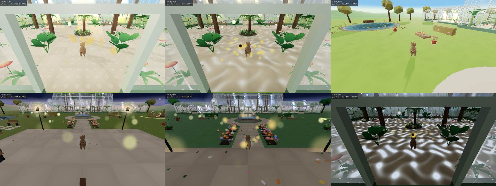

Page: tools/verify/verify-greenhouse.html. Top row: day with the golden moment (p7g_hall), rain (p6_hall, ?rain=1), sun burst (p6_beds, ?fx=sun:1). Bottom row: dusk court (?dusk=1), night court (?dusk=1&hour=23), night hall in rain (hour=23&rain=1). This sheet is AFTER only (no before render was made). Fixes: one shaft-gain cap and a halo alpha cap; at most two event effects at full strength (voice, golden moment, weather, night visitors; the rest dim to 30%, the golden moment waits for a free slot); at most four simultaneous voices (three for ambient ticks); glass 0.20/0.22 to 0.17/0.19; night rain caustics halved; snail, ladybird, cat eye bigger; dusk fireflies larger with a blink floor.
